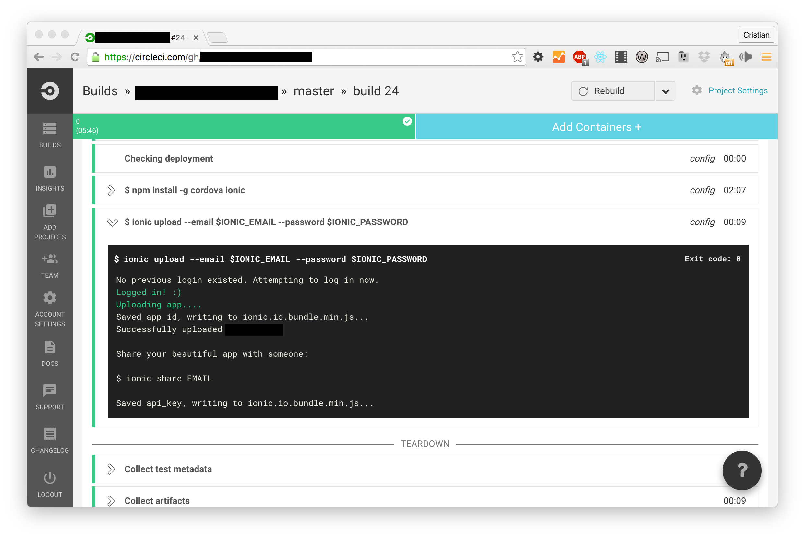

<h2>Continuous Deployment</h2>

<p>
    
</p>

<p>
    <a class="link" href="http://jasonbrown.io/continuously-deploy-your-ionic-app-using-circle-ci/">Continuously deploy your ionic app using Circle CI</a>
</p>
